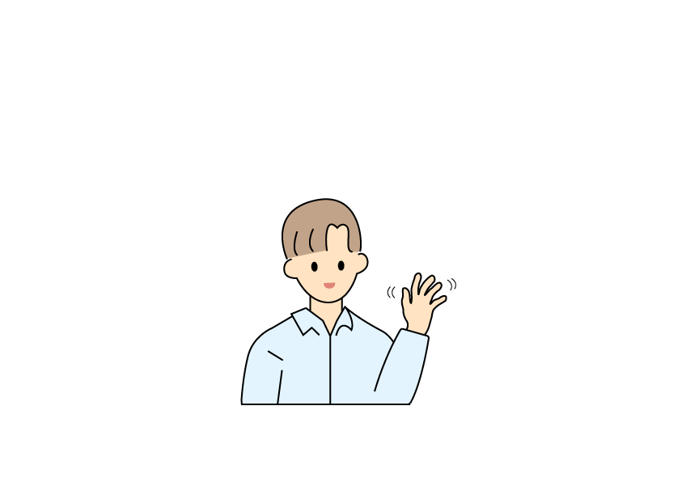
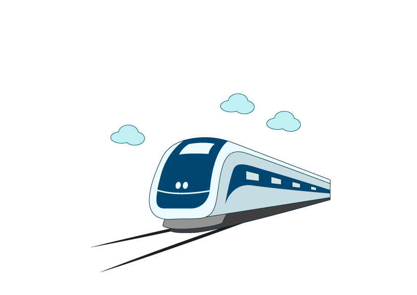
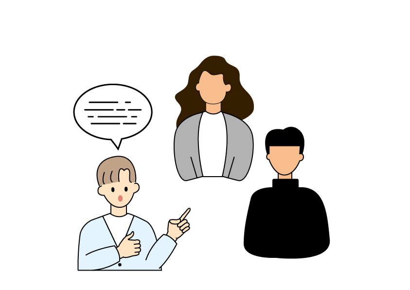
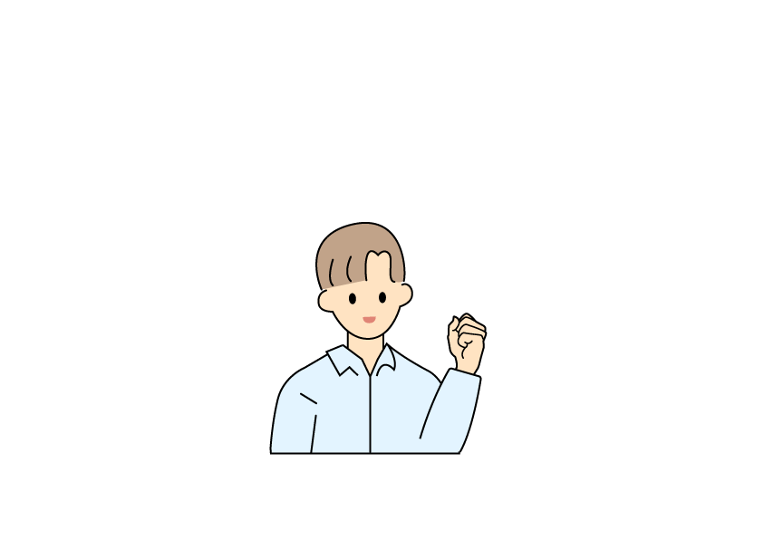
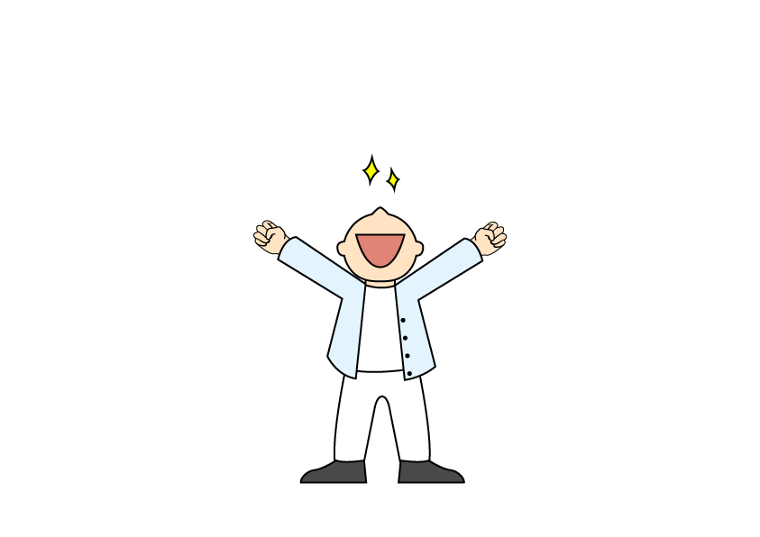
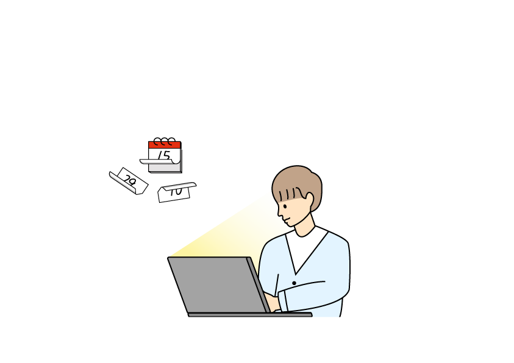

전역 후, 내가 정말 하고 싶은 일이 무엇인지를 알기 위해 학교를 자퇴했다.
시각적인 아름다움, 화려함만 추구하는 것이 아닌
사용자들의 편의 를 가장 생각하는
웹 퍼블리셔가 되겠습니다.
WORK.
PROJECT.

본연의 위치에서 머물러 있지 않고 더 나아가
계속해서 성장 할 수 있는,
미래 를
그려나가는 사람이 되겠습니다.
ABOUT.
김동현을 소개합니다.
저는 하루를 생각 없이 보내기보단 하루를 이끌어 갈 수 있는 사람이
되고 싶습니다.
저는 주어진 환경 속에서 탓하지 않고 원인을 저에게서 찾으려고
노력합니다.
또한 환경은 내가 만들어 나아가는 것이기에 주어진 환경 속에서
최선을 다할 것입니다.








남자라면 큰 물에서 놀아야한다는 마음으로 서울로 상경을 했다.
서울에 와서 예전부터 하고 싶었던 미용을 시작했다.
일을 하면서 사람들과 보다 나은 소통을 할 수 있는 법을 배웠다.
2년간의 했던 미용을 그만두고,
문제를 해결하는 것을 좋아하던 나는 새로운 도전을 위해,
코딩을 배우기로 마음먹었다.
처음에는 사람 만나는 일을 하다가 그래서인지 어색했지만,
안 되는 것을 해결했을 때의 느낌은 잊을 수 없었다.
배우는 기간 동안 누가 보아도 얘는 노력했구나를
보여주고 싶었다.
그런 마음으로 하루를 계획하다 보니, 시간이 정말 빠르게 지나갔다.
나의 최종 목표는 프론트엔드개발자가 되는 것 이다.
그래서 목표를 이루기 위해 취업을 하고도 계속 공부를 할 것이다.
No Shooting is No Goal
골을 넣기 위해 최선을 다 할 것이다.
읽어주셔서 감사합니다.
WHO AM I
안녕하세요 , 김동현입니다.
새로운 기술을 배우는 것에 흥미를 느끼며, 어느 환경에서나 잘 스며드는 웹 퍼블리서가 되길 희망합니다. 이후엔 공부를 하여 프론트엔드개발자가 되고 싶습니다.
Information
Name : 김동현
Birth : 1997 / 08 / 22
Address : 서울시 관악구Skill
Photoshop
Illustrator
Figma
HTML
CSS
JAVASCRIPT
j-Query
Git
Education
무학고등학교 졸업
안동대학교 응용화학과 자퇴
이젠 컴퓨터 아카데미 졸업